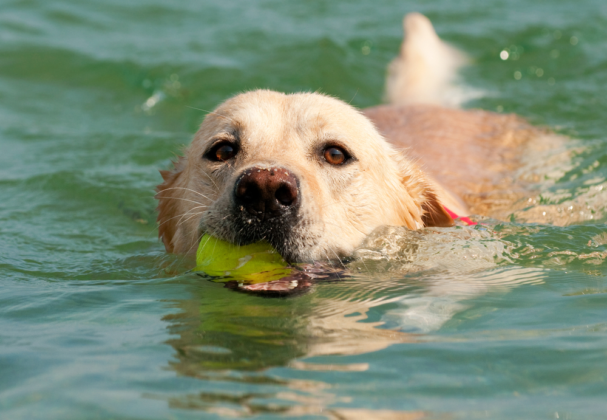
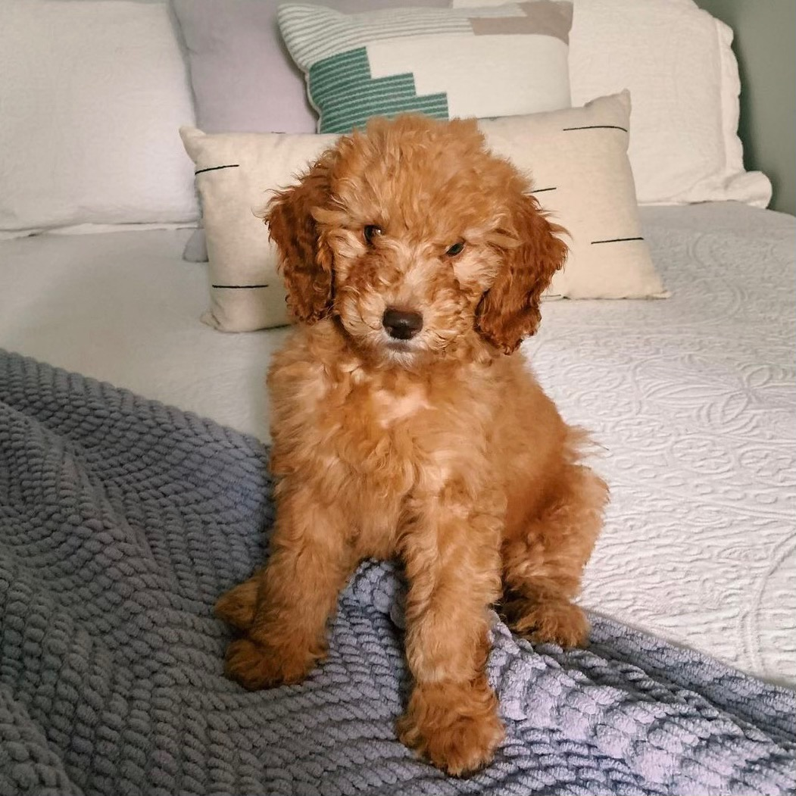
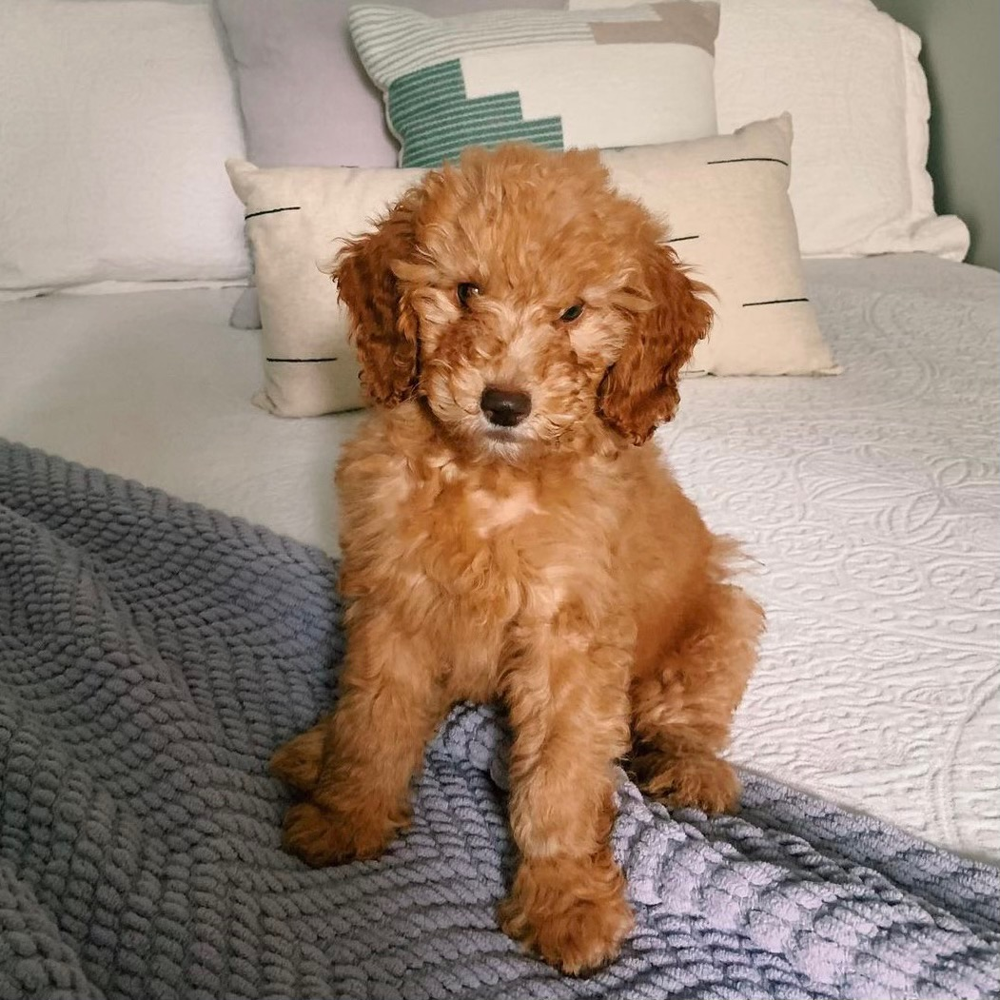
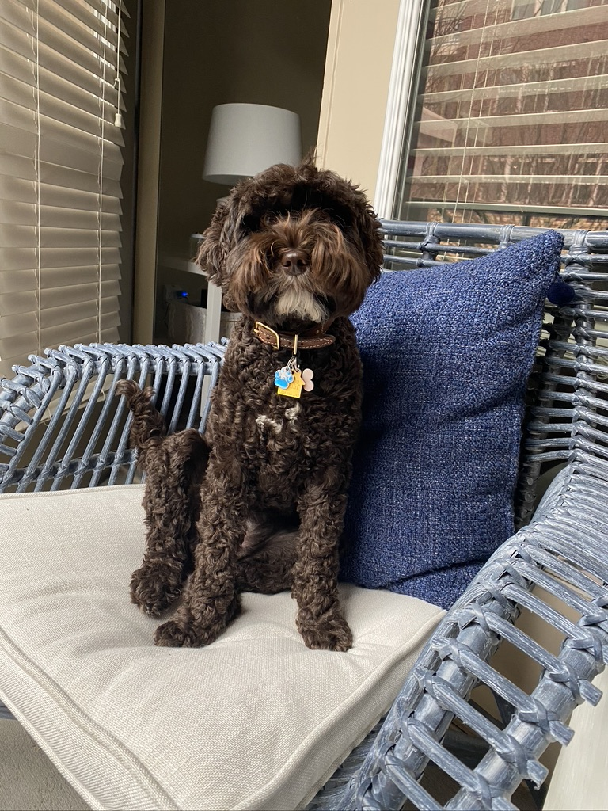
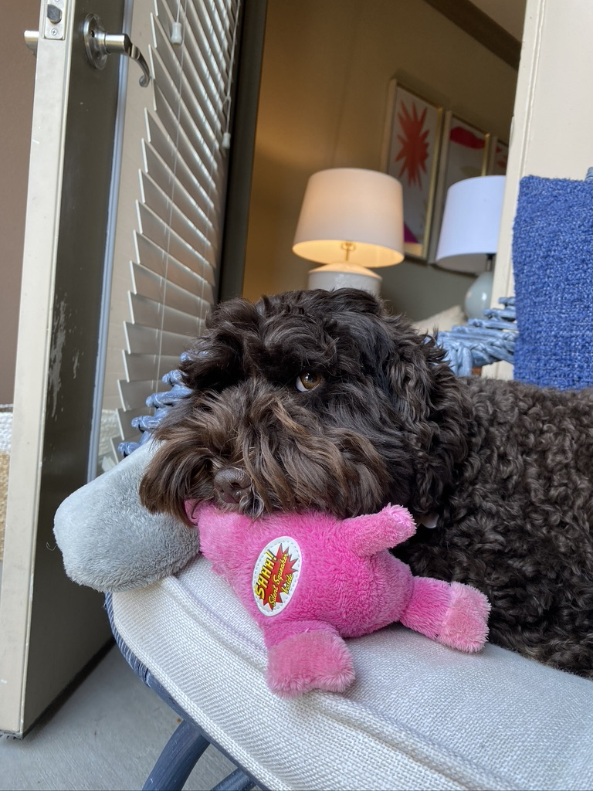

Pets
Bacon Q Dog

Bacon Q. Dog is a 9yr old labradoodle. He prefers to spend his days lounging among the three different beds/couches that his family has gifted him. He enjoys a walk or two around the neighborhood, as long as he can pretend that he doesn't see any of the other animals to avoid the embarrassment of not wanting to admit he has no wolf-like skills in chasing them.
At night just as the rest of the family is ready to relax, Bacon suddenly wants to release all of his energy. He will place his toys on a mini couch and frantically drag the couch around, giving his toys "a ride." There is also a lot of rolling. Lots and lots of rolling.
Photo Gallery


Likes
- Belly rubs
- Playing tug-of-war
- Sneaking onto the couch
Amol
Amol is a really cute dog. He loves fast fashion and streetwear. He is a fashion icon for the young. I aspire to dress like Dogmol once.
At night, Dogmol loves to play and exhibit his youthful energy. His favorite activity is running in the park and playing fetch with his family.
Photo Gallery

Likes
- Belly rubs
- Playing tug-of-war
- Sneaking onto the couch
Pluto

Charlie is a playful golden retriever with a love for long walks and fetch games. He's always ready for adventure and loves swimming in the lake.
Photo Gallery


Likes
- Swimming
- Playing fetch
- Long walks in the park
Luna

Luna is a mysterious and charming black cat. She enjoys exploring the garden and is an expert at catching pesky bugs.
Photo Gallery
 

Likes
- Exploring the garden
- Napping in sunny spots
- Playing with yarn
Georgia
Daisy is a cheerful and energetic beagle. She loves sniffing around the neighborhood and greeting everyone she meets.
Photo Gallery

Likes
- Greeting people
- Sniffing around
- Chewing on her toys